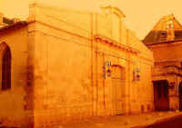

|


| |
|
| Mathieu goes back
to France |
| At the end of his contract with the
Jesuits, Mathieu
leaves Canada on Wednesday, October 31, 1646. Leaving so late is risky because of the ice on the
river and the storms in the North Atlantic.
Considering that on the way
back the westerly winds made it possible to cross the Atlantic
in only five weeks, Mathieu very probably got back to France in December.
He must have had so many
things to tell his family and friends! But what
seems most urgent to him is getting married. On February
26, 1647, he is before the notaire Pierre Teuleron to
sign a marriage contract with a young woman, Sébastienne
Veillon.
Did Mathieu know
Sébastienne before he left for Canada as an
engagé? Did Mathieu go ahead to Canada as a scout to see whether they
could settle there? Or was the marriage decided
only after Mathieu came back? In those days
marriages were "arranged" by the parents, and
romance had no part in it.
Did
Mathieu need a good deal of persuasion to convince
Sébastienne to leave her family and her country and follow him to
New France? Did he "embellish the
truth" about the harshness of the Canadian winter, the
Iroquois wars that had been going on since 1641, and the hard
work of clearing land? Did he ask his companion Robert Hache, a witness
at the contract and at the wedding, to back up what he told
Sébastienne, to convince her that leaving was the right thing to do?
Or, quite probably,
did Sébastienne simply have no choice:
"she who takes a husband takes his country"?. |
|
|
| Sébastienne
Veillon |
| Sébastienne Veillon
is the daughter of Maixent Veillon and Bernarde Venet. She
comes from Verdille in Poitou, 10 leagues from La
Rochelle.
The
province of Poitou was one of the thirty-three governments
into which Ancien Régime France was divided. It was bounded on the
north by Brittany, on the west by the Atlantic Ocean,
and on the south by the Aunis, whose capital is La Rochelle.
Geographically,
Poitou
is a rolling land of
low clay hills, spreading out in places into drier
limestone plateaus. The
province is watered by many rivers, which, however, rise
in other provinces. The Poitevin marsh, which the sea
gradually filled with silt, was the site of the first
salt pans, whose product fed maritime trade for
centuries. From the 16th century on, great
drainage works reclaimed land from these marshes,
and the most fertile parts were given over to crops
and livestock.
The
climate is temperate and oceanic, and the vegetation southern.
These conditions favour many crops,
such as wheat, vines, fruit, etc. The
province of Poitou must be counted among the
most fertile in France.
|
|
|
|
Marriage
contract
|

Click on the parchment to find the transcription
of Mathieu and Sébastienne's marriage contract, with an
attempt at a partial translation.
This contract, found by the genealogist Archange
Godbout, is really just one long sentence in the legal
turns of phrase of the time. Punctuation and accents
were added
by the copyist, but a great deal of
information can be drawn from it.
|
| In La Rochelle, on the afternoon of Tuesday,
February 26,
1647, Mathieu and Sébastienne gather with relatives
and friends at Pierre Rouyer's house to sign their marriage
contract before the royal notaire Pierre Teuleron
and his two
clerks. From reading this contract we can
learn several facts about the couple:
First, the document gives us the names of the parents of
the bride and groom.
Mathieu says he lives in Montréal. So he had left
Canada fully intending to come back.
Sébastienne lives in La Rochelle, though she comes from Poitou.
Mathieu's father is dead.
Sébastienne's mother is dead.
Sébastienne has an uncle, grandfather or maternal cousin named
Thomas Venette, an honourable merchant of La
Rochelle, who gives his consent to the marriage.
Among the witnesses there is also a Marie Venette,
an aunt, grandmother or cousin of Sébastienne's on
her mother's side.
The contract is signed in a private house,
that of a friend of Mathieu's, Pierre Rouyer, who is
also a witness at the wedding; he is a master joiner and cantor of St-Jean-du-Perrot,
another parish of La Rochelle (there were five
parishes).
Saint-Jean-du-Perrot
and Saint-Nicolas were the sailors' quarters. These
two parishes were originally two islets, each with a chapel.
The Perrot quarter belonged to the Hospitallers of
Saint John of Jerusalem, where pilgrims arriving from
the Holy Land had to stay in quarantine. The Hospitallers'
chapel of Saint-Jean became the church of
Saint-Jean-du-Perrot when the quarter was permanently joined
to the town.
So the notaire and his
two clerks come to the house to draw up the
marriage contract.
There are a lot of people at this contract signing:
at least seventeen, and not all of them signed.
So the event seems to have been an important one, and
probably an occasion to finish with a good meal.
Both the bride and groom are illiterate and cannot
sign at the bottom of their marriage contract.
Both the bride and groom are of age, so they are over
twenty-five, since at that time majority was reached at
twenty-five.
|
|
Pierre
Teuleron, royal notaire
Pierre Teuleron
was the most important notaire in La Rochelle in the 17th century.
He practised from 1631 to 1681. He handled all
kinds of contracts, but especially commercial deeds,
including the indenture contracts of the "thirty-six
months" for New France. |
 |
His office was in the
Canton des Flamands, right by the harbour, where merchants,
shipowners and ships' captains gathered every day,
so much so that chains closed off access between eleven and
one o'clock so as not to disturb the bargaining.
The La Rochelle historian Father Coutant places the Teuleron
house at no. 12 of what is now rue Chef-de-Ville. |
 |
|

|
|
|
| The wedding |
|

Mathieu and
Sébastienne marry on Monday, March 4, 1647 , in
the parish of Notre-Dame-de-Cougnes in La Rochelle, in the
Ste-Marguerite chapel.
They marry just before Ash Wednesday, the first
day of Lent,
a period during which no weddings are celebrated. Easter
that year falls on April 21.
The Marriage Record is
kept at the La Rochelle Library.
"On the fourth were
married Mathieu Chauré of the one part and Sébastienne
Veillon of the other part, both of this parish, after the
publication of the banns; the witnesses M. François Pierre Royer,
cantor of Saint-Jean du Perrot, Philippe Cadet, M. Robert
Hache, Zacharie Maloiseau and others"
Signatures: Prévot,
priest of the Oratory of Jesus, François Pierre Royer,
Zacharie Maloiseau, Philippe Cadet. |
|
|
| Departure for
Canada |
| Everything suggests that Mathieu and Sébastienne leave
the port of La Rochelle in the following weeks,
bound for Canada, where they settle in the
Quebec area.

Perhaps they travel with Mathieu's companion, Robert
Hache, a witness at their
wedding. One thing is certain: Hache also
returns to Canada,
since the following year he is godfather to Mathieu and
Sébastienne's first son. Robert Hache is a donné
of the Jesuits, that is, a servant for life.
He is an Algonquin from the
Trois-Rivières area, who was adopted and baptized by the
Jesuits and put himself in their service for the rest of his
life. At one point we find him
working as storekeeper at the Jesuits' trading counter in Quebec.
The Journal des Jésuites twice reproaches him
for misconduct "while under the influence of
drink". The first time, the Jesuits put him on short
rations, but the second time, more serious, Robert Hache is
arrested by the judicial authorities. He is accused of raping
a Frenchwoman on the Île d'Orléans in 1664 and sentenced to
death. He manages to escape. The authorities open
talks with the Indigenous chiefs to get him back. The chiefs
refuse, judging the penalty too harsh for the crime. Diplomacy
at work, it is agreed that in future the Indigenous peoples
would respect French law but that, in the case of
Robert Hache, there was no question of applying it, since he
did not know the law and would not have committed the crime had he
known the punishment....
So he got away with it, but did he go on serving the
Jesuits? We do not know. The French, so few in number,
and their Indigenous allies lived side by side in the early days of the
colony. The Jesuits wanted to make them Catholics, but
also settled people obeying French laws. They did not
succeed.
The settlers, on the other hand, learned a great deal from the Indigenous peoples
and adapted quickly to the country, developing a
"Canadian" identity that would grow more and more different from that
of the mother country. Mathieu returns to Canada with a one-year contract as
an engagé of the Jesuits. Though there is no official proof, it seems
that Mathieu Choret was the first resident of Canada to go
and marry in France and bring his wife back to the country. |
|
|
| |
|
|